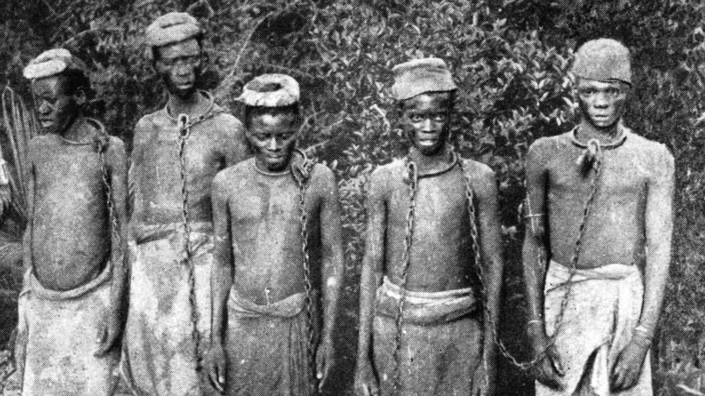
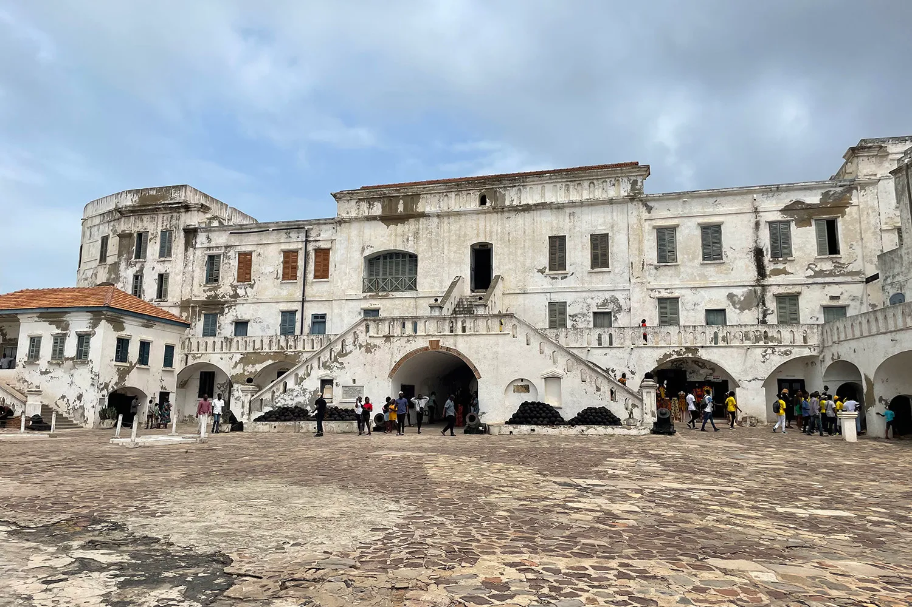

The Birth of the Slave Trade

The transatlantic slave trade began in the late 15th century when European traders arrived on the shores of West Africa.
Ghana, then known as the Gold Coast, became a central hub for this tragic trade due to its strategic location and rich natural resources.
Initially, the European powers, including the Portuguese, Dutch, and British, were drawn to the region by its wealth in gold.
However, the focus soon shifted to the human trade, with Ghana becoming one of the largest exporters of enslaved Africans.
The slave trade was brutal and inhumane. People were captured from their villages in the interior regions,
often through raids or as a result of wars, and then marched to the coast under horrific conditions. Once there,
they were held in dungeons within massive stone castles before being shipped across the Atlantic to the Americas.
The journey was perilous, and many did not survive the voyage, known as the Middle Passage,
due to the squalid and overcrowded conditions aboard the ships.

Cape Coast Castle: A Symbol of Suffering
One of the most infamous of these castles is Cape Coast Castle, located on the central coast of Ghana.
Originally built by the Swedish in 1653 and later expanded by the British,
Cape Coast Castle became one of the largest slave-holding sites on the West African coast.
The castle’s stark white walls and imposing structure contrast sharply with the darkness of the history it holds.
Inside the castle, visitors can walk through the dungeons where thousands of enslaved Africans were held in deplorable conditions,
often for weeks or months, as they awaited their fate. The dungeons were overcrowded, with little ventilation, no sanitation,
and minimal food. The suffering endured by those imprisoned here is unimaginable, and the echoes of their pain can still be felt today.
Perhaps the most haunting part of Cape Coast Castle is the “Door of No Return,” a small,
narrow passageway that leads out to the sea.
It was through this door that enslaved Africans were forced onto waiting ships,
leaving their homeland behind forever. For many, it was the last piece of African soil they would ever touch.
Today, the Door of No Return is a powerful symbol of the separation, loss,
and enduring resilience of those who were torn from their families and cultures.
Elmina Castle: The First European Structure in Sub-Saharan Africa
Another significant site is Elmina Castle, located a short distance from Cape Coast Castle.
Built by the Portuguese in 1482, it is the oldest European structure in Sub-Saharan Africa.
Originally established as a trade post for gold, it quickly became a key site in the slave trade.
Elmina Castle, like Cape Coast Castle, served as a holding and departure point for countless enslaved Africans.
The castle’s dark dungeons stand in stark contrast to the airy quarters of the European traders and officers above,
highlighting the brutality and inequality of the slave trade. The castle’s chapel, situated above the female slave dungeons,
is a chilling reminder of the moral contradictions of the time.
While prayers were offered above, unimaginable suffering occurred just below.The Legacy and Remembrance
The castles of Cape Coast and Elmina, along with other forts along the Ghanaian coast,
are now UNESCO World Heritage Sites. They serve as places of remembrance,
honouring the millions of lives affected by the transatlantic slave trade.
These sites are visited by thousands each year, including many from the African diaspora,
who come to reconnect with their roots and to pay their respects to their ancestors.
In recent years, Ghana has taken steps to reconcile with this painful past through initiatives like the
"Year of Return" in 2019, which marked 400 years since the first enslaved Africans arrived in Jamestown, Virginia.
The campaign encouraged people of African descent to visit Ghana, retrace their heritage, and find healing and connection
in the land of their ancestors.
Visiting these castles is a profound and emotional experience.
It’s a journey through history that reveals both the capacity for human cruelty and the resilience of the human spirit.
These sites stand as powerful reminders of the atrocities of the past, while also serving as symbols of remembrance, reflection,
and hope for a better future.